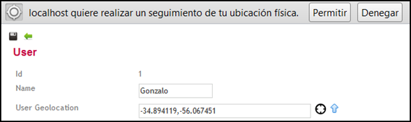
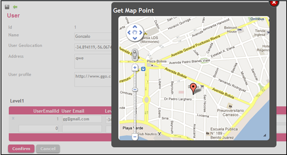
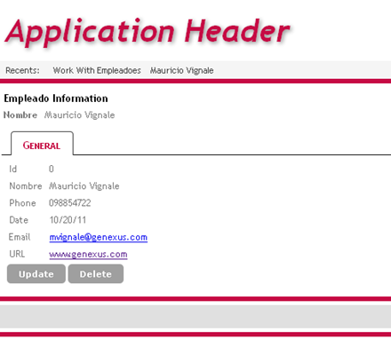
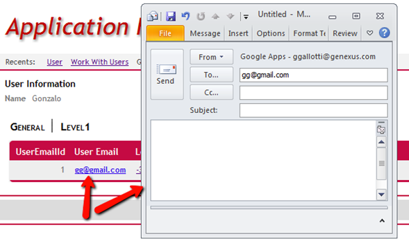

When developing web applications with GeneXus, it is desired that data inputs could have meanings or actions, according to the context of the application, for instance, if we are accessing a Transaction on Insert Mode, Each field will represent a different attribute, Id, Name, Phone, Email, Address, Etc., but we would also want that each one of these had a “semantic behavior” according to what it is supposed to mean, like obtaining or displaying an address on a map when displaying this data, or enabling a phone call. This idea is now implemented automatically, through new HTML Tags on web fields that links GeneXus Domains, with browsers actions that can be triggered, this is what are called Semantic domains GeoLocationThe previous example, when a field is intended to have an address, if it is set with a “GeoLocation” domain, this can be obtained by a <latitude, longitude> point, and also be displayed on a google map.   URLWhen displaying information related to an Organization, one of many fields could the URL of their site, and it can also be useful that when this information is displayed, the URL linked to this Site, actually in GeneXus that can be done by adding a Link() function, but now from Evolution 2 this feature will come as a default.  As seen at the previous image, also Email domains have also been revamped with these semantic domains, so when an Email attribute or variable is shown on screen, a default action is set to open the default mail client and create a new blank mail to this address  PhoneSemantic Domains can also add actions and behavior for smart device’s browsers, so when this apps are accessed from a Phone/tablet that fits into the smart device category, actions related to this devices will be set for any of this fields. Particularly on Phone Attributes/Variables will set an action that will enable to actually call the desired number. Sample
|